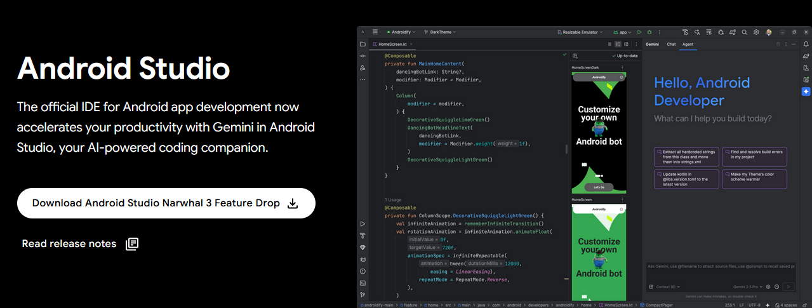
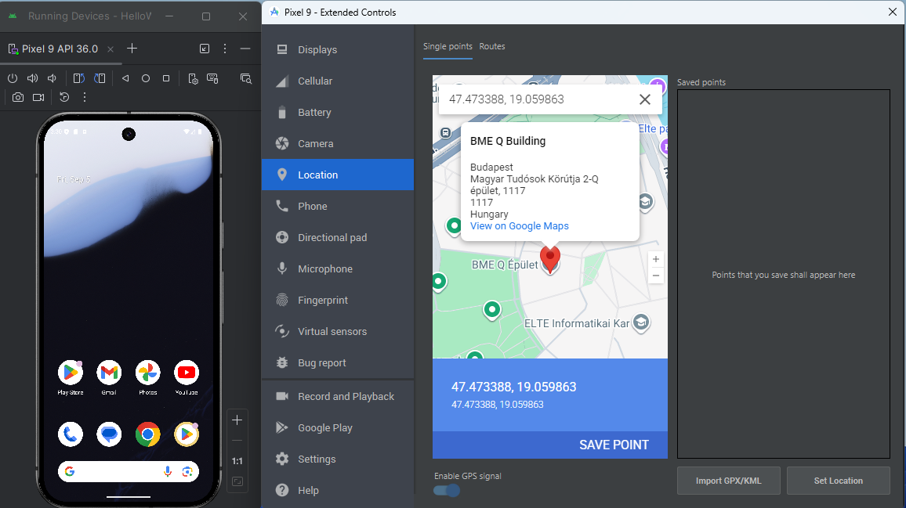
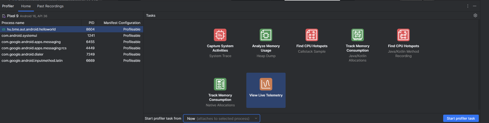

Labor 01 - Hello World¶
Az első labor rendhagyó a többihez képest. Itt kevés kóddal fogunk találkozni, inkább az alapok átnézésén van a hangsúly.
A labor célja, hogy bemutassa az Android fejlesztőkörnyezetet, az alkalmazáskészítés, illetve a tesztelés és fordítás folyamatát, az alkalmazás felügyeletét, valamint az emulátor és a fejlesztőkörnyezet funkcióit. Ismertetjük egy Hello World alkalmazás elkészítésének módját és labor során a laborvezető részletesen bemutatja az eszközöket.
A labor végén egy jegyzőkönyvet kell beadni a jegy megszerzéséhez.
A mérés az alábbi témákat érinti:
- Az Android platform alapfogalmainak ismerete
- Android Studio fejlesztőkörnyezet alapok
- Android Emulátor tulajdonságai
- Android projekt létrehozása és futtatása emulátoron
- Manifest állomány felépítése
- Android Profiler
El≈ëk√©sz√ºletek¶
A feladatok megoldása során ne felejtsd el követni a feladat beadás folyamatát.
Git repository l√©trehozása √©s let√∂lt√©se¶
-
Moodle-ben keresd meg a laborhoz tartozó meghívó URL-jét és annak segítségével hozd létre a saját repository-dat.
-
Várd meg, míg elkészül a repository, majd checkout-old ki.
Egyetemi laborokban, ha a checkout során nem kér a rendszer felhasználónevet és jelszót, és nem sikerül a checkout, akkor valószínűleg a gépen korábban megjegyzett felhasználónévvel próbálkozott a rendszer. Először töröld ki a mentett belépési adatokat (lásd itt), és próbáld újra.
-
Hozz létre egy új ágat
megoldasnéven, és ezen az ágon dolgozz. -
A
neptun.txtfájlba írd bele a Neptun kódodat. A fájlban semmi más ne szerepeljen, csak egyetlen sorban a Neptun kód 6 karaktere.
Markdown fájl megnyitása¶
A feladatok megoldása során a dokumentációt markdown formátumban készítsd. Az előbb letöltött git repository-t nyisd meg egy markdown kompatibilis szerkesztővel. Javasolt a Visual Studio Code használata:
-
Indítsd el a VS Code-ot.
-
A File > Open Folder... menüvel nyisd meg a git repository könyvtárát.
-
A bal oldali fában keresd meg a
README.mdfájlt és dupla kattintással nyisd meg. -
Ezt a fájlt szerkeszd.
-
Ha képet készítesz, azt is tedd a repository alá a többi fájl mellé. Így relatív elérési útvonallal (fájlnév) fogod tudni hivatkozni.
Fájlnév: csupa kisbetű ékezet nélkül
A képek fájlnevében ne használj ékezetes karaktereket, szóközöket, se kis- és nagybetűket keverve. A különböző platformok és a git eltérően kezelik a fájlneveket. A GitHub webes felületén akkor fog minden rendben megjelenni, ha csak az angol ábécé kisbetűit használod a fájlnevekben.
-
A kényelmes szerkesztéshez nyisd meg az előnézet funkciót (Ctrl-K + V).
Más szerkesztőeszköz
Ha nem szimpatikus ez a szerkesztő, használhatod a GitHub webes felületét is a dokumentáció szerkesztéséhez, itt is van előnézet. Ekkor a fájlok feltöltése kicsit körülményesebb lesz.
Android alapok¶
Ford√≠tás menete Android platformon¶
A projekt létrehozása után a forráskód az src könyvtárban, míg a felhasználói felület leírására szolgáló XML állományok a res könyvtárban találhatók. Az erőforrás állományokat egy R.java állomány köti össze a forráskóddal, így könnyedén elérhetjük Java/Kotlin oldalról az XML-ben definiált felületi elemeket. Az Android projekt fordításának eredménye egy APK állomány, melyet közvetlenül telepíthetünk mobil eszközre.

Fordítás menete Android platformon
-
A fejlesztő elkészíti a Kotlin forráskódot, valamint az XML alapú felhasználói felület leírást a szükséges erőforrás állományokkal.
-
A fejlesztőkörnyezet az erőforrás állományokból folyamatosan naprakészen tartja az
R.javaerőforrás fájlt a fejlesztéshez és a fordításhoz.FONTOS
Az
R.javaállomány generált, kézzel SOHA ne módosítsuk! (Az Android Studio egyébként nem is hagyja.) -
A fejlesztő a Manifest állományban beállítja az alkalmazás hozzáférési jogosultságait (pl. Internet elérés, szenzorok használata, stb.), illetve ha futás idejű jogosultságok szükségesek, ezt kezeli.
-
A fordító a forráskódból, az erőforrásokból és a külső könyvtárakból előállítja az ART virtuális gép gépi kódját.
-
A gépi kódból és az erőforrásokból előáll a nem aláírt APK állomány.
-
Végül a rendszer végrehajtja az aláírást és előáll a készülékekre telepíthető, aláírt APK.
Az Android Studio a Gradle build rendszert használja ezeknek a lépéseknek az elvégézéséhez.
Megjegyzések
-
A teljes folyamat a fejlesztői gépen megy végbe, a készülékekre már csak bináris állomány jut el.
-
A külső könyvtárak általában JAR állományként, vagy egy másik projekt hozzáadásával illeszthetők az aktuális projekthez (de ezt nem kell kézzel megtennünk, a függőségek kezelésében is a Gradle fog segíteni).
-
Az APK állomány leginkább a Java világban ismert JAR állományokhoz hasonlítható.
-
A Manifest állományban meg kell adni a támogatni kívánt Android verziót, mely felfele kompatibilis az újabb verziókkal, ennél régebbi verzióra azonban az alkalmazás már nem telepíthető.
-
Az Android folyamatosan frissülő verzióival folymatosan lépést kell tartaniuk a fejlesztőknek.
-
Az Android alkalmazásokat tipikusan a Google Play Store-ban szokták publikálni, így az APK formátumban való terjesztés nem annyira elterjedt.
SDK √©s k√∂nyvtárai¶
A developer.android.com/studio oldalról letölthető az IDE és az SDK. Ennek fontosabb mappáit, eszközeit tekintsék át a laborvezető segítségével!

SDK szerkezet:
docs:Dokumentációextras:Különböző extra szoftverek helye. Maven repository, support libes anyagok, analytics SDK, Google Android USB driver (amennyiben SDK managerrel ezt is letöltöttük) stb.platform-tools:Fastboot és ADB binárisok helye (legtöbbet használt eszközök)platforms,samples,sources,system-images:Minden API levelhez külön almappában a platform anyagok, források, példaprojektek, OS image-ektools:Fordítást és tesztelést segítő eszközök, SDK manager, 9Patch drawer, emulátor binárisok stb.
AVD √©s SDK manager¶
Az SDK kezelésére az SDK managert használjuk, ezzel lehet letölteni és frissen tartani az eszközeinket. Indítása az Android Studion keresztül lehetséges.
Az SDK Manager ikonja a fenti toolbaron:

SDK manager felülete:
Megjegyzés
Korábban létezett egy standalone SDK manager de ennek használata mára deprecated lett. Ha online forrásokban ilyet látunk ne lepődjünk meg.
Indítsuk el az AVD managert, és vizsgáljuk meg a laborvezetővel, hogy rendelkezésre áll-e minden, ami az első alkalmazásunkhoz kelleni fog.
AVD¶
Az AVD az Android Virtual Device rövidítése. Ahogy arról már előadáson is szó esett, nem csak valódi eszközön futtathatjuk a kódunkat, hanem emulátoron is. (Mi is a különbség szimulátor és emulátor között?) Az AVD indítása a fejlesztői környezeten keresztül lehetséges (illetve parancssorból is, de ennek a használatára csak speciális esetekben van szükség).
Az AVD Manager ikonja:


A fenti képen bal oldalon a létező virtuális eszközök listáját találjuk, jobb oldalon pedig az ún. eszköz definíciókét. Itt néhány előre elkészített sablon áll rendelkezésre. Magunk is készíthetünk ilyet, ha tipikusan egy adott eszközre szeretnénk fejleszteni (pl. Galaxy S4). Készítsünk új emulátort! Értelemszerűen csak olyan API szintű eszközt készíthetünk, amilyenek rendelkezésre állnak az SDK manageren keresztül.
- A bal oldali ablakon, kattintsunk a bal alsó sarokban található Create Virtual Device... gombra!
- Válasszunk az előre definiált készülék sablonokból (pl. Nexus 5X), majd nyomjuk meg a Next gombot.
- Döntsük el, hogy milyen Android verziójú emulátort kívánunk használni. CPU/ABI alapvetően x86_64 legyen, mivel ezekhez kapunk hardveres gyorsítást is. Itt válasszunk a rendelkezésre állók közül egyet, majd Next.
-
Az eszköz részletes konfigurációja.
- A virtuális eszköz neve legyen például
Labor_0. - Válasszuk ki az alapértelmezett orientációt, tetszés szerint kapcsoljuk ki vagy be a készülék keretének megjelenítését.
A Show Advanced Settings alatt további opciókat találunk:
- Kamera opciók:
- WebcamX, hardveres kamera, ami a számítógépre van csatlakoztatva
- Emulated, egy egyszerű szoftveres megoldás, most legalább az egyik kamera legyen ilyen.
- VirtualScene, egy kifinomultabb szoftveres megoldás, amelyben egy 3D világban mozgathatjuk a kamerát.
- Hálózat: Állíthatjuk a sebességét és a késleltetését is kommunikációs technológiák szerint.
- Boot Option: Nemrég jelent meg az Android emulátor állapotáról való pillanatkép elmentésének lehetősége. Ez azt takarja, hogy a virtuális operációs rendszer csak felfüggesztésre kerül az emulátor bezáráskor (például a megnyitott alkalmazás is megmarad, a teljes állapotával), és Quick boot esetben a teljes OS indítása helyett másodperceken belül elindul az emulált rendszer. Cold Boot esetben minden alkalommal leállítja és újra indítja a virtális eszköz teljes operációs rendszerét.
-
Memória és tárhely:
- RAM: Ha kevés a rendszermemóriánk, nem érdemes 768 MB-nál többet adni, mert könnyen futhatunk problémákba. Ha az emulátor lefagy, vagy az egész OS megáll működés közben, akkor állítsuk alacsonyabbra ezt az értéket. 8 GB vagy több rendszermemória mellett nyugodtan állíthatjuk az emulátor memóriáját 1024, 1536, vagy 2048 MB-ra.
- VM heap: az alkalmazások virtuális gépének szól, maradhat az alapérték. Tudni kell, hogy készülékek esetében gyártónként változik.
- Belső flash memória és SD kártya mérete, alapvetően jók az alapértelmezett beállításai.
-
Ha mindent rendben talál az ablak, akkor Finish!
- A virtuális eszköz neve legyen például

Az Android Virtual Device Manager-ben megjelent az imént létrehozott eszközünk. Itt lehetőség van a korábban megadott paraméterek szerkesztésére, a "készülékről" a felhasználói adatok törlésére (Wipe Data - Teljes visszaállítás), illetve az emulátor példány duplikálására vagy törlésére.
A Play gombbal indítsuk el az új emulátort!
Az elindított emulátoron próbáljuk ki az API Demos és Dev Tools alkalmazásokat!
Megjegyzés
A gyári emulátoron kívül több alternatíva is létezik, mint pl. a Genymotion vagy a BigNox, viszont a Google féle emulátor a legelterjedtebb, így amennyiben ezzel nem jelentkeznek problémáink, maradjunk ennél.
Tesztelés céljából nagyon jól használható az emulátor, amely az alábbi képen látható plusz funkciókat is adja. Lehetőség van többek között egyedi hely beállítására, bejövő hívás szimulálására, stb. A panelt a futó emulátor jobb oldalán található vezérlő gombok közül a ... gombbal lehet megnyitni:

Fejleszt≈ëi k√∂rnyezet¶
Android fejlesztésre a labor során a JetBrains IntelliJ alapjain nyugvó Android Studio-t fogjuk használni. A Studio-val ismerkedők számára hasznos funkció a Tip of the day, érdemes egyből kipróbálni, megnézni az adott funkciót. Induláskor alapértelmezetten a legutóbbi projekt nyílik meg, ha nincs ilyen, vagy ha minden projektünket bezártuk, akkor a nyitó képernyő. (A legutóbbi projekt újranyitását a Settings -> Appeareance & Behavior -> System Settings -> Reopen last project on startup opcióval ki is kapcsolhatjuk.)
Hello World¶
A laborvezető segítségével készítsenek egy egyszerű Hello World alkalmazást, a varázsló nézeten az Include Kotlin support legyen bepipálva!
FILE PATH
A projekt a repository-ban lévő HelloWorld könyvtárba kerüljön!
Android Studio¶
Ez a rész azoknak szól, akik korábban már használták az Eclipse nevű IDE-t, és szeretnék megismerni a különbségeket az Android Studio-hoz képest.
- Import régi projektekből: Android Studioban lehetséges a projekt importálása régebbi verziójú projektekből és a régi Eclipse projektekből is.
-
Projektstruktúra: Az Android Studio Gradle-lel fordít, és más felépítést használ. Projekten belül:
.idea: IDE fájlokapp: forrásbuild: fordított állományoklibs: libraryksrc: forráskód, azon belül is külön projekt a tesztnek, és azon belül pedigreskönyvtár, illetvejava. Utóbbin belül már a csomagok vannak.
gradle: Gradle fájlok
-
Hasznos funkciók:
- IntelliSense, fejlett refaktorálás támogatás
- Ha egy sorban színre, vagy képi erőforrásra hivatkozunk, a sor elejére kitesz egy miniatűr változatot.
- Ha közvetve hivatkozott erőforrást (akár
resources.get..., akárR...) adunk meg, összecsukja a hivatkozást és a tényleges értéket mutatja. Ha rávisszük az egeret felfedi, ha kattintunk kibontja a hivatkozást. - Névtelen belső osztályokkal is hasonlót tud, javítva a kód olvashatóságát.
- Kódkiegészítésnél szabad a kereső, a szótöredéket keresi, nem pedig a szóval kezdődő lehetőségeket (lásd képen)
- Változónév ajánlás: amikor változónévre van szükségünk, nyomjunk Ctrl+Space-t. Ha adottak a körülmények, a Studio egész jó neveket tud felajánlani.
- Szigorú lint. A Studio megengedi a warningot. Ezért szigorúbb a lint, több mindenre figyelmeztet (olyan apróságra is, hogy egy View egyik oldalán van padding, a másikon nincs)
- Layout szerkesztés. A grafikus layout építés lehetséges.
- CTRL-t lenyomva navigálhatunk a kódban, pl. osztályra, metódushívásra kattintva. Ezt a navigációt (és az egyszerű másik osztályba kattintást is) rögzíti, és a historyban előre-hátra gombokkal lehet lépkedni. Ha van az egerünkön/billentyűzetünkön ilyen gomb, és netes böngészés közben aktívan használjuk, ezt a funkciót nagyon hasznosnak fogjuk találni.

Szín ikonja a sor elején; kiemelve jobb oldalon, hogy melyik nézeten vagyunk; szabadszavas kiegészítés; a "Hello world" igazából @string/very_very_very_long_hello_world.
Billentyűkombináci√≥k¶
- CTRL + ALT + L: Kódformázás
- CTRL + SPACE: Kódkiegészítés
- SHIFT + F6 Átnevezés (Mindenhol)
- F2: A következő error-ra ugrik. Ha nincs error, akkor warningra.
- CTRL + Z illetve CTRL + SHIFT + Z: Visszavonás és Mégis
- CTRL + P: Paraméterek mutatása
- ALT + INSERT: Metódus generálása
- CTRL + O: Metódus felüldefiniálása
- CTRL + F9: Fordítás
- SHIFT + F10: Fordítás és futtatás
- SHIFT SHIFT: Keresés mindenhol
- CTRL + N: Keresés osztályokban
- CTRL + SHIFT + N: Keresés fájlokban
- CTRL + ALT + SHIFT + N: Keresés szimbólumokban (például függvények, property-k)
- CTRL + SHIFT + A: Keresés a beállításokban, kiadható parancsokban.
Eszk√∂z√∂k, szerkeszt≈ëk¶
A View menü Tool Windows menüpontjában lehetőség van különböző ablakok ki- és bekapcsolására. Laborvezető segítségével tekintsék át az alábbi eszközöket!
- Project
- Structure
- TODO
- Logcat
- Terminal
- Event Log
- Gradle
Lehetőség van felosztani a szerkesztőablakot, ehhez kattinsunk egy megnyitott fájl tabfülére jobb gombbal, Split Vertically/Horizontally!
Hasznos beáll√≠tások¶
A laborvezető segítségével állítsák be a következő hasznos funkciókat:
- kis- nagybetű érzékenység kikapcsolása a kódkiegészítőben (settingsben keresés: sensitive)
- "laptop mód" ki- és bekapcsolása (File -> Power Save Mode)
- sorszámozás bekapcsolása (kód melletti részen bal oldalt: jobb egérgomb, Show Line Numbers)
Generálhat√≥ elemek¶
A Studio sok sablont tartalmaz, röviden tekintsék át a lehetőségeket:
- Projektfában, projektre jobb gombbal kattintva -> new -> module
- Projektfában, modulon belül, "java"-ra kattintva jobb gombbal -> new
- Forráskódban ALT+INSERT billentyűkombinációra
Android Profiler¶
A készülék erőforráshasználata monitorozható ezen a felületen, amelyet az említett View -> Tool Windows-ból érhetünk el.

Például részletes információt kaphatunk a hálózati forgalomról:

Database Inspector¶
A készüléken debuggolt alkalmazásunknak az adatbázisát is meg tudjuk tekinteni.
Device File Explorer¶
A készüléken lévő fájlrendszert is böngészhetjük.

Feladatok (10 x 0.5 pont)¶
- Az új alkalmazást futtassák emulátoron (akinek saját készüléke van, az is próbálja ki)!
- Helyezzenek breakpointot a kódba, és debug módban indítsák az alkalmazást! (Érdemes megyfigyelni, hogy most másik Gradle Task fut a képernyő alján.)
- Indítsanak hívást és küldjenek SMS-t az emulátorra! Mit tapasztalnak?
- Indítsanak hívást és küldjenek SMS-t az emulátorról! Mit tapasztalnak?
- Tekintse át az Android Profiler nézet funkcióit a laborvezető segítségével!
- Változtassa meg a készülék tartózkodási helyét az emulátor megfelelő paneljének segítségével!
- Vizsgálja meg az elindított
HelloWorldprojekt nyitott szálait, memóriafoglalását! - Vizsgálja meg a Logcat panel tartalmát!
- Vizsgálja meg az Analyze -> Inspect code eredményét!
- Keresse ki a létrehozott
HelloWorldprojekt mappáját és a build könyvtáron belül vizsgálja meg az.apkállomány tartalmát! Hol található a lefordított kód?
BEADANDÓ
A labor teljesítéséhez a fenti feladatokat kell végrehajtani és az eredményeket dokumentálni. Ezt minden egyes feladatnál egy képernyőképpel és rövid, néhány mondatos magyarázattal kell megtenni. A jegyzőkönyvet a repository-ban lévő README.md fájlban kell elkészíteni.
A dokumentációnak a képekkel együtt helyesen kell megjelenniük a GitHub webes felületén is! Ezt ellenőrizd a beadás során: nyisd meg a repository-d webes felületét, váltsd át a megfelelő ágra, és a GitHub automatikusan renderelni fogja a README.md fájlt a képekkel együtt.